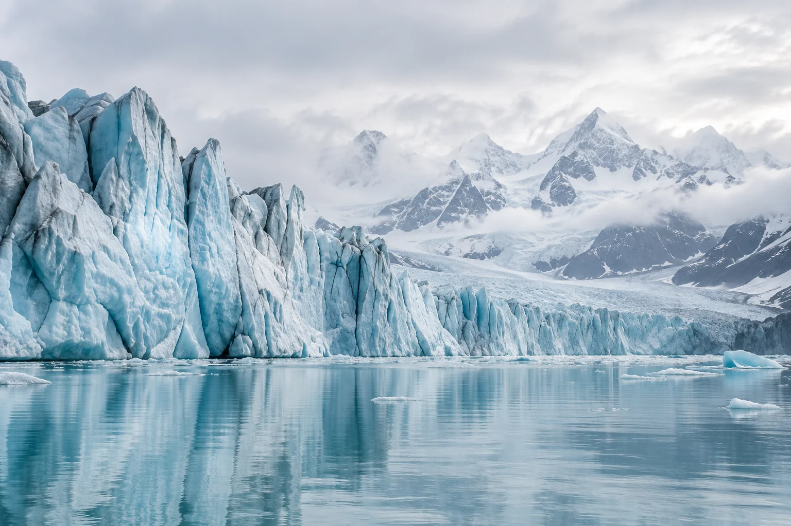
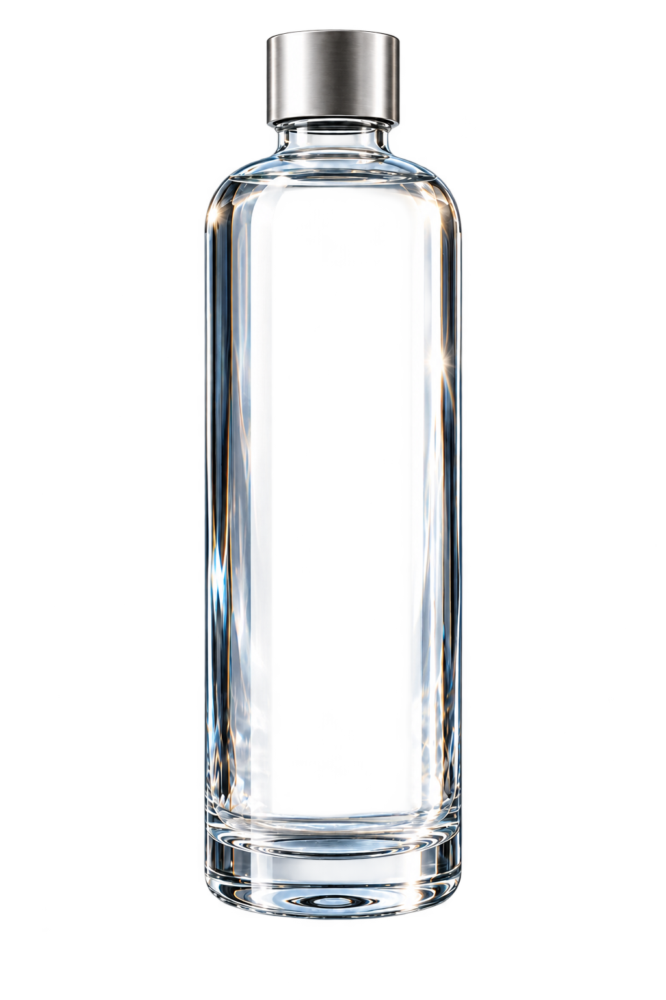
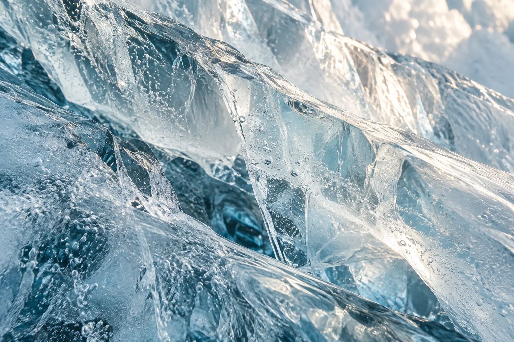
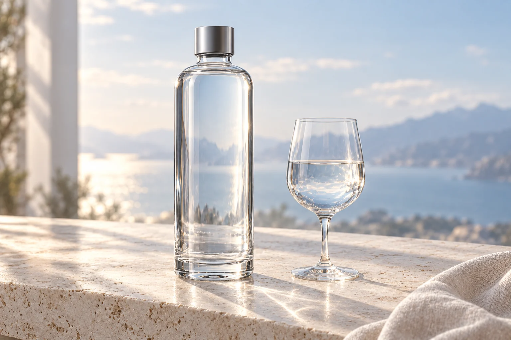

От природы. К идее.
Большая история.
В простых вещах.
Неподвижная вода. Глубокий лёд. Северный свет.
Пейзаж, который вдохновил нас убрать всё лишнее.


Вдохновлено севером. Создано для момента.
Дизайн ТИШЬ
Красота открывается в деталях.
Плавные плечи. Чистые линии. Стекло, которое позволяет свету стать частью формы.
От природы. К идее.
Неподвижная вода. Глубокий лёд. Северный свет.
Пейзаж, который вдохновил нас убрать всё лишнее.


Убрать телефон. Наполнить бокал. Быть.

Искусство простого
ТИШЬ — концепция воды и предмета вокруг неё.
Исследование формы, света и маленьких ежедневных ритуалов.